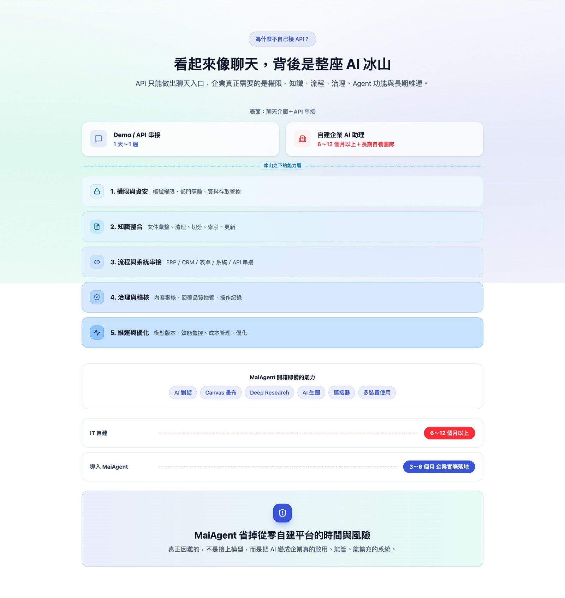

Website & Content CMS
The company's public site, and the content back-office the marketing team runs themselves. Mine from the first commit to handover.
Letting marketing publish on their own
Content back-officeMarketing had been drafting in Notion and asking engineering to publish, so every post had to fit into a development slot. With the content back-office built into the same project, they schedule their own posts, read version history and an audit log, and send the newsletter in one click. Before handover I audited the back-office and fixed scheduled publishing, timezone conversion and media uploads; images over 20 MB used to fail outright, and now compress automatically so marketing can upload originals.
The site itself is bilingual, with SEO, performance and accessibility work and a responsive rebuild. The front-end interface design and the content layout are mine as well: page structure, component styling, and the order of copy and imagery on each page, decided against what each product line needed to say rather than dropped into an existing template.
Leads land in the CRM
Campaign forms write straight into the CRM and open a task for sales automatically, replacing the copy-and-paste that came before.
I also built an analytics page, reworked the services page, and rewrote how the product line is presented: the official deck became a product matrix and an adoption path, so sales and marketing could cite the same source.
Built with AI-assisted development (Claude Code).


